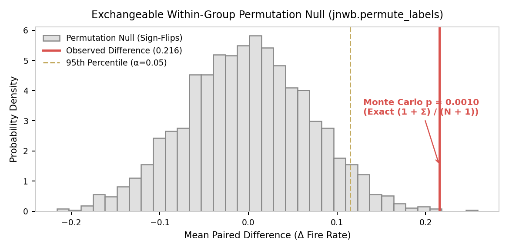

07. Statistical Inference, Resampling & Null Hypothesis Modeling¶
This document details statistical inference, bootstrap confidence intervals, exchangeable label permutations, false discovery control, paired fire probability testing, and cycle detection in jnwb.
1. The StatisticalAnalysis Engine (jnwb.statistics)¶
jnwb.statistics.StatisticalAnalysis provides a unified interface for parametric, non-parametric, and resampling-based inference.
Local RNG Injection & Global RNG Isolation¶
All statistical resampling functions accept an optional rng: np.random.Generator.
- Isolated Determinism: By default, functions instantiate an internal generator (default_rng(42)) to ensure repeatable outputs without mutating Python or NumPy global RNG state.
- Caller Control: Callers can supply independent np.random.Generator streams for parallel sweeps.
- Strict Typing: Supplying a non-Generator object raises an explicit TypeError.
import numpy as np
from jnwb import StatisticalAnalysis as stats
# Supply an independent, caller-controlled local Generator
custom_rng = np.random.default_rng(12345)
# Bootstrap Confidence Intervals
boot_res = stats.bootstrap_ci(
data,
statistic_func=np.mean,
n_bootstrap=5000,
ci=0.95,
rng=custom_rng
)
print("Bootstrap 95% CI:", boot_res["bootstrap_ci"])
print("Bootstrap Std Error:", boot_res["bootstrap_std"])
# Two-Sample Permutation Test
perm_res = stats.permutation_test(
group_a,
group_b,
n_permutations=5000,
rng=custom_rng
)
print("Permutation p-value:", perm_res["pval"])
2. Group Comparisons & False Discovery Rate (FDR) Control¶
Exploratory vs Confirmatory Comparisons¶
StatisticalAnalysis.exploratory_compare and StatisticalAnalysis.exploratory_correlate compute unadjusted dual parametric and non-parametric statistics for exploratory screening without FDR theatre:
# Exploratory dual comparison
comparison = stats.exploratory_compare(
group1,
group2,
paired=False,
n_bootstrap=2000,
rng=custom_rng
)
# Returns clean parametric ('parametric') and non-parametric ('non_parametric') metrics,
# alongside bootstrap mean difference confidence intervals.
Benjamini-Hochberg FDR Control (fdr_correct)¶
For confirmatory hypothesis testing across cohorts of channels, frequency bins, or time lags, apply explicit FDR control:
p_values = np.array([0.001, 0.004, 0.015, 0.048, 0.120])
significant_mask, p_adjusted = stats.fdr_correct(p_values, alpha=0.05, method="bh")
3. Standalone Rate Extraction & Paired Binary Fire Probability¶
jnwb exports top-level standalone statistical functions:
import jnwb
# Fast spike count windowing
spike_rate = jnwb.rate_in_window(spike_times, onset_s=10.5, window_ms=(0.0, 150.0))
# Binary fire indicator (True if >= 1 spike in window)
has_fired = jnwb.fires_in_window(spike_times, onset_s=10.5, window_ms=(0.0, 150.0))
fired_array = jnwb.fire_indicator(spike_times, onsets_array, window_ms=(0.0, 150.0))
# Paired fire probability test
fire_test = jnwb.paired_fire_prob_test(
fires_target=fired_target,
fires_null=fired_baseline,
n_shuffles=2000,
n_bootstrap=2000,
rng=custom_rng
)
print("Odds Ratio:", fire_test["odds_ratio"])
print("Shuffle p-value:", fire_test["p_value_fire_shuffle"])
Fast Paired & Unpaired Shuffle p-values¶
# Paired shuffle test
diff, p_val = jnwb.shuffle_pvalue_paired(a, b, n_shuffles=5000, rng=custom_rng)
# Unpaired shuffle test
diff, p_val_unpaired = jnwb.shuffle_pvalue_unpaired(a, b, n_shuffles=5000, rng=custom_rng)
Cluster-Based Permutation Testing (cluster_permutation_test)¶
For continuous time series, spectra, and time-frequency representations (TFRs), mass-univariate testing creates severe multiple testing problems. jnwb.cluster_permutation_test implements Maris & Oostenveld (2007) non-parametric cluster-based permutation testing with maximum-cluster FWER control and exact finite Monte Carlo p-values:
# X, Y: (n_trials, n_freqs, n_times) or (n_trials, n_times)
# 1. Paired differences (sign-flip exchangeability)
res_paired = jnwb.cluster_permutation_test(
X, Y,
paired=True,
threshold=2.5, # Point-wise t-statistic threshold for cluster formation
n_permutations=1000, # Monte Carlo permutations
tail="both", # "both", "greater", or "less"
rng=custom_rng
)
# 2. Independent groups with within-session exchangeability restriction
# (prevents false discoveries caused by session baseline differences)
res_grouped = jnwb.cluster_permutation_test(
X, Y,
paired=False,
groups=(session_X, session_Y),
scheme="within_group",
threshold=2.5,
n_permutations=1000,
rng=custom_rng
)
print(f"Identified {len(res_grouped['clusters'])} clusters.")
for c in res_grouped["clusters"]:
print(f"Cluster mass: {c['statistic']:.2f}, p-value: {c['p_value']:.4f}")
4. Exchangeable Label Permutation Schemes (jnwb.permutation)¶
The Grouped Exchangeability Invariant¶
When decoding stimulus conditions across sessions, recording blocks, or behavioral cycles, naive shuffling across the whole array violates exchangeability.
jnwb.permute_labels requires callers to explicitly specify the permutation scheme:
import jnwb
labels = np.array(["A", "B", "A", "B", "A", "B"])
cycle_id = np.array([1, 1, 2, 2, 3, 3])
# Within-group exchangeability: shuffles labels ONLY within each cycle/block
null_labels = jnwb.permute_labels(
labels,
groups=cycle_id,
scheme="within_group",
rng=custom_rng
)
# Pre-build permutation plan for repetitive batch cross-validation
plan = jnwb.build_permutation_plan(
n_samples=len(labels),
n_permutations=1000,
groups=cycle_id,
scheme="within_group",
rng=custom_rng
)

5. Trial Cycle Detection, Subblock Stratification & Cross-Modal Comparison¶
# Detect periodic stimulus cycles in trial tables
cycle_labels = jnwb.detect_trial_cycles(trial_times, cycle_length_s=4.0)
# Assign quartile ranks within temporal subblocks
quartiles = jnwb.assign_subblock_quartiles(trial_times, n_quartiles=4)
# Compute bootstrap confidence interval on model R2
r2_ci = jnwb.shuffle_r2_ci(y_true, y_pred, groups=cycle_id, n_shuffle=200)
# Cross-modal correlation and temporal alignment comparison
modal_res = jnwb.cross_modal_comparison(lfp_envelope, spike_psth, bin_ms=10.0)